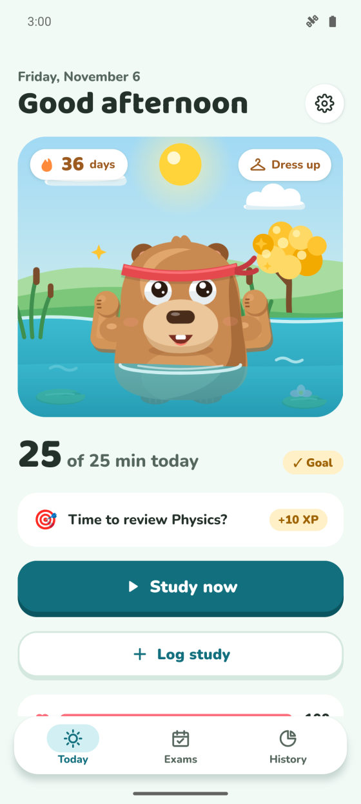

CapyFoco
Study every day with a capybara that grows with you.
Focus timer, daily streaks and exam countdowns. The more you study, the happier and stronger your capybara gets.

How it helps
Daily goal and streak
Pick how many minutes to study each day. Hit it and your streak grows while your capybara celebrates.
Real focus
A timer with three modes. In Protected Mode, your capybara shows up on top of the apps you want to avoid.
Exams in sight
Add your exam and see the days left. Every day you get a mission with the subject that needs you most.
Your capybara, your style
Earn XP by studying and spend it on outfits and accessories.
FAQ
Is CapyFoco free?
Yes, with ads. Optional Premium removes ads and unlocks Protected Mode, silent notifications during focus and 3 streak shields a month.
Do I need an account?
No. Your data stays on your phone. You can sync it with your own Google Drive if you want.
Is there an iPhone version?
Android only for now. iPhone is in our plans.
Contact: osamdemendes@gmail.com